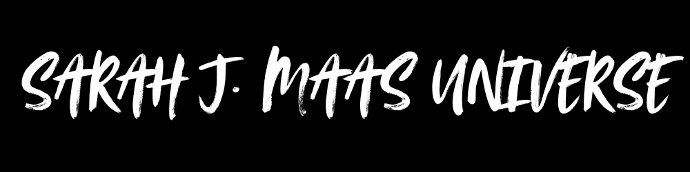
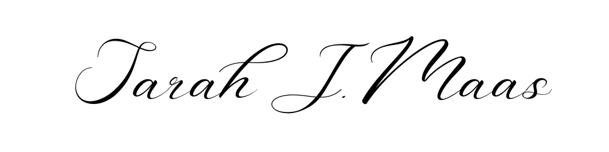

Sarah J. Maas is an American author, best known for writing young adult fantasy novels. She was born on March 5, 1986, in New York City. Maas gained prominence with her debut series "Throne of Glass", which follows the story of a young assassin named Celaena Sardothien. The series, which began in 2012, consists of multiple books and has been well-received by readers for its complex characters, world-building, and intricate plot.
In addition to "Throne of Glass", Maas is also known for her "A Court of Thorns and Roses" (ACOTAR) series, which debuted in 2015. ACOTAR is a blend of high fantasy and romance, drawing inspiration from "Beauty and the Beast", and has similarly garnered a large fan base. Maas’s writing style often features strong female protagonists, romance, and magical worlds.
She has become one of the most prominent voices in young adult and new adult fantasy, with her books being published in multiple languages and adapted into other media.
Sarah J. Maas's works have been praised for their compelling characters, especially the growth of her female leads, and for blending romance with complex plots and magic systems. Her books often deal with themes such as trauma, personal growth, and self-empowerment. Maas's ability to create vivid, immersive worlds has contributed to her success, and she remains a highly influential figure in the genre.
"Throne of Glass" follows Celaena Sardothien, an assassin who is forced to compete in a deadly competition to earn her freedom. The series explores her journey through a world of magic, betrayal, and complex politics.
"A Court of Thorns and Roses" is a blend of fantasy and romance, inspired by Beauty and the Beast, centered around Feyre Archeron, a mortal who becomes entangled with the fae world. Themes of love, war, and power dominate this series.
"Crescent City" is Maas’s newer urban fantasy series, set in a world of magical creatures, where Bryce Quinlan, a half-fae woman, seeks justice for her murdered friends while uncovering dark secrets about her world.